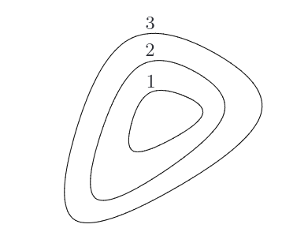
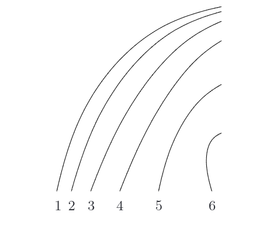

DATA 609 - Homework 4: Convex Functions
Instructions
Please submit a .qmd file along with a rendered pdf to the Brightspace page for this assignment. You may use whatever language you like within your qmd file, I recommend python, julia, or R.
Problem 1: (Exercise 3.2 in CVX Book)
- The figure below shows three levels sets for a function \(f\). The value of the function on the level set is indicated by the number next to each curve. For example, the curve labeled \(1\) corresponds to the points \(\mathbf{x}\in\mathbb{R}^2\) satisfying \(f(\mathbf{x}) = 1\).
Determine whether it is possible for the function \(f\) to be convex, concave, quasiconvex, or quasiconcave. Give a brief justification for your answer.
Note: it may be that several options are possible, that one is possible, or that none at all are.

Part A Solution
The first function appears to be a quasiconvex because the sublevel sets appear to be convex. It is definitely not concave or quasiconcave because the superlevel sets are not convex. For second function,
- The figure below shows level sets for a different function \(g\). Again determine whether it is possible for the function \(g\) to be convex, concave, quasiconvex, or quasiconcave. Note: it may be that several options are possible, that one is possible, or that none at all are.

Problem 2: (CVX Book Extended Exercises 3.1)
Determine the curvature of the functions below. Your responses can be affine, convex, concave, or none (meaning not convex or concave). Provide a brief justification
- \(f(x) = \min(2,x,\sqrt{x})\) with \(\mathbf{dom} f = \{x\,|\, x\geq 0\}\) (i.e. \(\mathbb{R}_+\))
- \(f(x) = x^3\), with \(\mathbf{dom} f = \mathbb{R}\)
- \(f(x) = x^3\), with \(\mathbf{dom} f = \{x\,|\, x\geq 1\}\)
- \(f(x,y) = \sqrt{x\min(y,2)}\), with \(\mathbf{dom} f = \{(x,y)\,|\, x\geq 0\, , y\geq 0\}\) (i.e. \(\mathbb{R}^2_+\))
- \(f(x,y) = \left(\sqrt{x} +\sqrt{y}\right)^2\) with \(\mathbf{dom} f = \{(x,y)\,|\, x\geq 0\,,\, y\geq 0\}\) (i.e. \(\mathbb{R}^2_+\))
Problem 3: (Selected from CVX Book Extended Exercises 3.51-3.52)
For each of the following problems implement the following functions using Disciplined Convex Programming and CVX, and use CVX to verify that they are convex
\(f(x,y) = \frac{1}{xy}\), with \(\mathbf{dom} f = \mathbb{R}^2_{++}\). Hint: Use the Atoms listed below part (b) as well as addition, subtraction, and scalar multiplication. There are multiple ways to solve this problem.
\(f(x,y) = \sqrt{1+\frac{x^2}{y}}\), with \(\mathbf{dom} f = \mathbb{R}\times\mathbb{R}_{++}\) (this means \(x\) is any real number and \(y\) is strictly greater than 0.
Hint: The following atoms may be helpful, there are multiple ways to solve this problem.
inv_pos(u), which is \(1/u\), with domain \(\mathbb{R}_{++}\)square(u), which isu^2, with domain \(\mathbb{R}\)sqrt(u), which is \(\sqrt{u}\), with domain \(\mathbb{R}_+\)geo_mean(u,v), which is \(\sqrt{uv}\), with domain \(\mathbb{R}^2_+\)quad_over_lin(u,v), which is \(u^2/v\), with domain \(\mathbb{R} \times \mathbb{R}_{++}\)norm2(u,v), which is \(\sqrt{u^2 + v^2}\) , with domain \(\mathbb{R}^2\).
Problem 4: Periodic Poisson Regression to predict Car Crashes
For this problem, we will be working with the dataset nyc_crashes.csv, which contains a time series of the number of car crashes occurring in Manhattan every hour for a period of time. Here we will develop a Poisson regression model to predict rate of crashes during each time of day.
- Consider the following statistical model for the number of crashes \(N_i\) during hour \(i\) of a given day.
\[ N_i \sim \exp(-\lambda_i)\frac{\lambda_i^{N_i}}{{N_i}!} \]
where \(i\) ranges from \(0\) to \(23\) and corresponds to the hour of the day. Suppose that we have a dataset of counts for crashes where \(C_{ni}\) is the number of crashes that occur in the \(i\)th hour of the \(n\)th day. Then the log likelihood function for the parameters \(\lambda\) is: \[
- \log(p(C|\lambda)) = \sum_{n=1}^N \sum_{i=0}^{23} \left( \lambda_i - C_{ni}\log(\lambda_i) + \log(C_{ni}!)\right)
\]
However, we can drop terms terms that don’t depend on \(\lambda\) because they will have no impact on the maximum likelihood solution. This lets us form a simpler objective function:
\[ L(C|\lambda) = \sum_{n=1}^N\sum_{i=0}^{23} \left(\lambda_i - C_{ni}\log(\lambda_i)\right) \] or if we use matrix-vector notation: \[ L(C|\lambda) = N\mathbf{1}^T\lambda - \mathbf{1}^T C \log(\lambda) \] where \(\log(\lambda)\) is interpreted as a vector whose \(i\)th entry is \(\log(\lambda_i)\) and the vector \(\mathbf{1}^T\) has all entries equal to \(1\) and has the right dimension in each case to make the resulting expressions scalars (24 and \(N\), for our dataset \(N\) will be 43).
Show that \(L(C|\lambda)\) is a convex function of the coefficients \(\lambda\) on the domain \(\lambda \in \mathbb{R}^{24}_{++}\).
- The log-likelihood function \(L\) can be minimized to find the maximum likelihood estimate for the \(\lambda\) coefficients. Formulate this constrained optimization problem in
CVXand solve it for the NYC crashes dataset, that is solve:
\[ \min_{\lambda} L(C|\lambda) \\ \lambda \in \mathbb{R}^{24}_{+} \]
Make a plot of the \(\lambda\) coefficients
- It would be reasonable to expect that the rate of crashes in two adjacent hours should be similar, i.e. the observation that there has been a crash at 3:01PM should influence the estimate of the rate of crashes between 2:00PM and 3:00PM in addition to between 3:00PM and 4:00PM. One way to implement this is through the following regularization term, which applies a penalty proportional to the square of the difference between \(\lambda_i\) and \(\lambda_{i+1}\): \[ L_{pen}(C|\lambda,\rho) = L(C|\lambda) + \rho\left( \sum_{i=1}^{23} (\lambda_i-\lambda_{i-1})^2 + (\lambda_0-\lambda_{23})^2\right) \]
Assuming that \(\rho>0\), show that \(L_{pen}(C|\lambda)\) is a convex function on \(\mathbb{R}^{24}_{++}\)
- Formulate the regularized maximum likelihood problem:
\[ \min_{\lambda} L_{pen}(C|\lambda,\rho) \\ \lambda \in \mathbb{R}^{24}_{+} \\ \]
and solve it using CVX. Solve it for a range of positive values \(\rho\) such that for your smallest values the solution appears like your solution to (b) and for your largest values the \(\lambda\) show much less variation over time.
Hint: There are many ways to implement this penalty term in cvx. A way that you might find useful is to define a matrix \(S\) where \(S_{ii} = 1\), \(S_{i,i-1} = -1\) for \(i>1\) and \(S_{1,24}=-1\), with \(S=0\) for all other entries:
Then \(S\lambda = \begin{bmatrix} [(\lambda_1 - \lambda_{24}) & (\lambda_2-\lambda_1) & \cdots & (\lambda_{24}-\lambda_{23}) \end{bmatrix}^T\), and you can use cvx.square and cvx.sum to construct the objective.